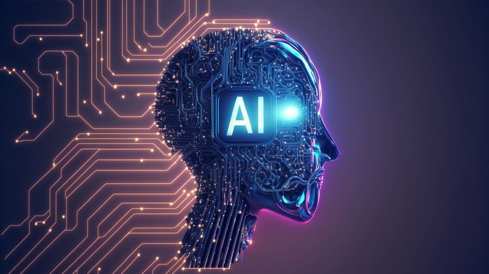

Inicio
La inteligencia artificial (IA) se ha convertido en una de las tecnologías más influyentes del siglo XXI. Su objetivo principal es desarrollar sistemas capaces de realizar tareas que, hasta hace poco, requerían inteligencia humana, como el reconocimiento de voz, la toma de decisiones o la resolución de problemas complejos. Hoy en día, la IA está presente en múltiples aspectos de nuestra vida diaria, desde los asistentes virtuales en nuestros teléfonos hasta los algoritmos que personalizan nuestro contenido en redes sociales. Esta revolución tecnológica está transformando la forma en que trabajamos, aprendemos e interactuamos con el mundo.
